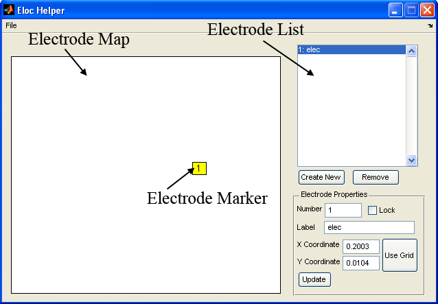
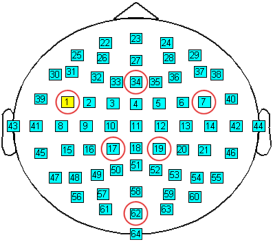

![[Main Page]](../../rsrc/bci2000logo.svg)
Designing an Eloc File
User Tutorial
The BCI2000 Offline Analysis tool generates up to three different types of plots to aid you in determining the best features in a given dataset. One of these plot types - the topographic plot - provides a spatial representation of the subjects response to a given stimulus. So, when generating such a plot, the electrode layout must be taken into account. To communicate this layout to the BCI2000 Offline Analysis tool, we use a montage file. This section of the tutorial will show you how to use the Eloc Helper tool to create and modify montage files.
Contents
Creating a new montage file
First, let's create a new ECoG montage file:
- Open the Eloc Helper tool. If this is your first time using the tool, you may want to briefly review User Reference:Eloc Helper for instructions on how to install and run this application.
- Click File>New>ECoG Montage File to start working on a new ECoG montage file. Since ECoGs are taken using an electrode grid, you will be given a square electrode map.
- Create your first electrode:
- Click the "Create New" button.
- Set the coordinates by clicking the "Use Grid" button and then clicking on the blank electrode map.
- Click the "Update" button after which you should see an electrode marker appear in the location you clicked on in the previous step. Notice that the marker is labeled with the number "1" (i.e., the value that was set automatically for the number property of the electrode) and that the electrode list has a new item "1: elec" consisting of the electrode number and label. Try changing the number and label to something else and clicking "Update." Keep in mind that the number must be a strictly positive integer (i.e., 1, 2, 3...) and that the label must be no more than 4 characters. 
{kind=link}
For the montage files we need to create to work with the data in this tutorial, it is much more convenient to start from an existing file.
Modifying an existing montage file
- Click File>Import>EEG Montage File.
- Since we added a new electrode in the previous section, you will be asked if it's okay to overwrite all the current entries. Click "Yes".
- In the "Choose a montage file" file browser, navigate to data/samplefiles and double-click or otherwise open the "eeg58.loc" file.
"eeg58.loc" is a montage file for an electrode cap with 58 electrodes. The electrode layout for the data we'll be analyzing later is very similar, but it has 6 more electrodes which are marked in the diagram below. So, to create the 64 electrode montage file, we can simply modify the 58 electrode montage file that we've already imported. When we do this, we must make sure that the numbers in the new montage file are the same as in the diagram below as these numbers correspond to channels on an amplifier. 
{kind=link}
In Eloc Helper, when an electrode is added with a number that is already taken by another electrode, the old electrodes are displaced in order to make room for the new electrode. This is also the case if an electrode is edited to have the same number as another electrode in the list. So, the easiest way for us to build the 64 electrode montage file from the 58 electrode montage file is to add the highest number electrodes first. So, we begin by adding electrode 62 (as labeled in the diagram above):
- Click "Create New" to add a new electrode. By default, this electrode takes on the number 59, the next available number.
- Change the number to 62, the electrode we want to add.
- Check the checkbox labeled "Lock". This prevents the number from being automatically changed as explained above.
- Change the label to "Oz", the 10-20 pneumonic for the location.
- To set the X and Y coordinates, click "Use Grid" and then click on the electrode map where the missing electrode should go.
- Click "Update" to insert the new electrode. Just as before, the new electrode appears on the electrode map and on the electrode list. This time, however, the text in the electrode list appears as "62*:Oz". The "*", in this case, is to indicate that this item is locked.
Now, repeat the same process in the order specified for the electrodes and their respective labels summarized below. As you add each electrode, notice how the electrodes already in the list move only enough to make way for the new electrode. Also notice that the electrodes you've locked will not move at all.
| Number | 10-20 Label |
| 34 | Fz |
| 19 | Cp2 |
| 17 | Cp1 |
| 7 | Fc6 |
| 1 | Fc5 |
Now that you've finished creating your electrode file, you'll want to export it so that it can be used with the BCI2000 Offline Analysis tool. You may also wish to export to the montage file format supported by BCI2000. Note that Eloc Helper is not capable of importing BCI2000-formatted montage files. Therefore, it is recommended that you always export to an Offline Analysis-formatted montage file and then export to a BCI2000-formatted montage file if necessary. So, let's begin by exporting to an Offline Analysis-formatted montage file as is recommended:
Exporting your montage file for use with BCI2000 Offline Analysis
Follow these steps to export your new montage file for use with BCI2000 Offline Analysis:
- Click File>Export to>Offline Analysis Montage File.
- Navigate to files/samplefile.
- Enter the filename "myeeg64.loc" and save.
Exporting your montage file for use with BCI2000
Although this step is unnecessary for the purposes of the tutorial, you can follow these steps to export your new montage file for use with BCI2000:
- Click File>Export to>BCI2000 Montage File.
- Navigate to files/samplefile.
- Enter the filename "myeeg64.csv" and save. Please take note of the "csv" extension as opposed to the "loc" extension used previously. Although the extension does not matter, we will want to avoid overwriting the file we created in the previous section.